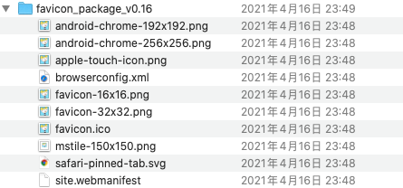

安装 Hugo
可参考Hugo 官方的 Quick Start
Windows使用
1
2
3
4
5
6
7
8
9
10
11
12
13
14
|
# 设置环境变量
Windows版本为一个exe文件，需要放到一个目录中，并修改Windows系统的环境变量
# 创建新项目（网站）
hugo new site my_website
# 生成用于发布的静态文件（不包含草稿）
hugo
# 生成用于发布的静态文件（包括草稿）
hugo -D
# 本地运行网站
hugo server
|
安装 GIT
可到官方GIT网站下载
安装 LoveIt 主题
1
2
|
# 位于你的博客项目根目录
git clone https://github.com/dillonzq/LoveIt.git themes/LoveIt
|
代码克隆成功后在./themes文件夹下应出现LoveIt文件夹。
详细可参考LoveIt 官方文档
项目文件树结构
1
2
3
4
5
6
7
8
9
10
|
.
├── archetypes # markdown文章的模版
├── config.toml # 配置文件
├── content # 网站内容，主要保存文章
├── data # 生成网站可用的数据文件，可用在模版中
├── layouts # 生成网站时可用的模版
├── public # 通过hugo命令生成的静态文件，主要发布这个
├── resources # 通过hugo命令一起生成的资源文件，暂时不知道什么用
├── static # 静态文件，比如文章中的图片/视频文件、缩略图等
└── themes # 保存可用的hugo主题
|
通常，我们只会用到以下几个文件夹的东西
config.toml ：保存 hugo 的配置，包括主题的配置等。详细设置见下方 网站配置content：保存网站的各种内容，比如文章。archetypes： 保存文章的 markdown 模版，通常包括文章的前缀注释，是一些在创建新文章时会被用到。static ：保存文章中用到的静态文件，比如图片、网站缩略图等。public ：通过hugo命令生成的静态 html 文件、css、js 等。在服务器上发布时主要发布这个文件夹。
配置网站设置
配置文件位置：./config.toml
具体的配置条目参考LoveIt 官方文档
配置缩略图
-
使用的网站：https://realfavicongenerator.net/ 获取缩略图的各种格式

-
将整个压缩包的文件（包括图片之外的文件）放到./static下
-
重启浏览器，应该可以看到标签上的缩略图出现了。

开始写第一篇文章
Makedown编辑软件
Typora和Joplin这两个软件，前一个收费，后一个开源免费
文章前缀参数
在每篇 markdown 文章最前面可以用一部分注释来告诉LoveIt主题，这篇文章的属性，譬如文章标签、分类、是否为草稿等。
详细可参考LoveIt 官方文档
将文章前缀参数保存在 markdown 模版中
模版文件位置：./archetypes/default.md
我使用的md模版
1
2
3
4
5
6
7
8
9
10
11
12
13
14
15
16
17
18
19
20
21
22
23
24
25
26
27
|
---
title: "{{ replace .Name "-" " " | title }}"
date: {{ .Date }}
draft: false
author: "Dorien"
authorLink: "http://dorien.com"
description: ""
images: []
resources:
- name: "featured-image"
src: "featured-image.jpg"
tags: ["", ""]
categories: [""]
#如果设为 true, 这篇文章将不会显示在主页上.
hiddenFromHomePage: false
#LoveIt 新增 | 0.2.0 如果设为 true, 这篇文章将不会显示在搜索结果中.
hiddenFromSearch: false
#LoveIt 新增 | 0.2.0 如果设为 true, 这篇文章会使用 twemoji.
twemoji: false
#如果设为 true, 文章中的图片将可以按照画廊形式呈现.
lightgallery: true
toc:
auto: false
---
|
生成新文章
生成新文章的命令：
执行完成后，在./content/posts目录下应该可以看到新文件，同时里面已经有 markdown 模版中的文章前缀参数。
技巧
1
2
3
4
5
6
7
8
9
10
11
12
|
.
└── content
└── about
| └── index.md // <- https://example.com/about/
├── posts
| ├── firstpost.md // <- https://example.com/posts/firstpost/
| ├── happy
| | └── ness.md // <- https://example.com/posts/happy/ness/
| └── secondpost.md // <- https://example.com/posts/secondpost/
└── quote
├── first.md // <- https://example.com/quote/first/
└── second.md // <- https://example.com/quote/second/
|
本地调试
本地调试命令：
1
|
hugo server --disableFastRender
|
本地运行网站
出现成功的提示后在浏览器打开http://localhost:1313即可看到网站。
创建 Github 仓库
个人建议创建两个仓库：
第一个仓库
按照常规方式创建仓库即可，反正设置为private权限等级，也没人看得见。
第一个仓库示例，保存博客源代码
链接本地仓库与远端仓库
1
2
3
4
5
6
7
8
9
10
11
12
13
14
15
16
17
18
19
20
21
22
23
|
## 位于博客源代码根目录
## 初始化本地Git仓库
git init
## 设置名为Origin的远端Git仓库
git remote add origin https://github.com/DorienY/BlogSource.git
## 选择所有文件
git add -A
## GIT设置
git config --global user.email "1@1.com"(你的注册邮箱)
git config --global user.name "a"(你的用户名)
## 查看git设置
git config --list
## 将文件添加到仓库
git commit -m "first commint"
## Push到github
git push -u origin main
|
删除远端的文件
1
2
3
4
5
6
7
8
9
10
11
|
## 删除缓冲区文件
git rm hello.jpg
## 查看状态
git status
## 提交到仓库
git commit -m "del hello.jpg"
## 将本地仓库代码提交到远程仓库
git push
|
创建.gitignore
在源代码项目中创建.gitignore文件，来防止把生成的静态文件上传。创建位置如下：
1
2
3
4
5
6
7
8
9
10
11
12
13
14
|
.
├── .git
├── .github
├── .gitignore <---- 在根目录下
├── README.md
├── archetypes
├── config.toml
├── content
├── data
├── layouts
├── public
├── resources
├── static
└── themes
|
在.gitignore中写入/public，来防止 Git 将其上传。
1
2
3
4
|
cat .gitignore
## 输出
/public
|
第二个仓库
创建仓库，注意名称
第二个仓库名字比较重要，必须是{{你的github用户名}}.github.io。 比如我的 Github 名字为JellyZhang,那么我需要创建的仓库名称为JellyZhang.github.io。
在仓库设置里设置启用Github Pages
找到仓库设置
找到Pages一栏
设置Branch与静态文件位置
这个地方设置Branch为master，静态文件位置为/(root)，原因是我们在下个步骤中会直接将生成的public文件夹中的内容push到master分支的/目录下。
给源代码仓库添加 Github Action
Github Actions 可以帮你自动执行 Hugo 的编译、部署，配置好之后平时只需要维护一份 hugo 博客的源码，push 时自动发布到 Github Pages 上
SSH
这里需要重新生成一对密钥，使用之前用来配置过 Github 的密钥不能在这里使用啦，会报错提示已经被使用过啦。
1
2
3
4
5
6
7
8
9
10
|
ssh-keygen -t rsa - -C "$(git config user.email)"
# 注意：这次不要直接回车，以免覆盖之前生成的
# 确认秘钥的保存路径（如果不需要改路径则直接回车）；如果已经有秘钥文件，则需要换一个路径，避免覆盖掉，如我更改之后的路径为 /home/kearney/.ssh_action/id_rsa；
# 创建密码（如果不需要密码则直接回车）；
# 确认密码（如果不需要密码则直接回车），生成结束；
# 查看公钥，路径需要改为你上面的设置
cat ~/.ssh_action/id_rsa.pub
# 查看私钥
cat ~/.ssh_action/id_rsa
|
创建 CI 脚本
在源代码项目根目录下新建.github/workflow/build.yml。(通过 Github Action 网页端操作也可以)
1
2
3
4
5
6
7
8
9
10
11
12
13
14
15
16
|
.
├── .git
├── .github
│ └── workflows
│ └── build.yml <---在这里创建
├── .gitignore
├── README.md
├── archetypes
├── config.toml
├── content
├── data
├── layouts
├── public
├── resources
├── static
└── themes
|
build.yml脚本内容：
1
|
# This is a basic workflow to help you get started with Actions name: CI # Controls when the action will run. on: # Triggers the workflow on push or pull request events but only for the master branch push: branches: [master] pull_request: branches: [master] # Allows you to run this workflow manually from the Actions tab workflow_dispatch: # A workflow run is made up of one or more jobs that can run sequentially or in parallel jobs: # This workflow contains a single job called "build" build: # The type of runner that the job will run on runs-on: ubuntu-latest # Steps represent a sequence of tasks that will be executed as part of the job steps: # Checks-out your repository under $GITHUB_WORKSPACE, so your job can access it - uses: actions/checkout@v2 with: submodules: true # Fetch Hugo themes (true OR recursive) fetch-depth: 0 # Fetch all history for .GitInfo and .Lastmod - name: Hugo setup # You may pin to the exact commit or the version. # uses: peaceiris/actions-hugo@2e89aa66d0093e4cd14751b3028fc1a179452c2e uses: peaceiris/actions-hugo@v2.4.13 with: # The Hugo version to download (if necessary) and use. Example: 0.58.2 hugo-version: latest # optional, default is latest # Download (if necessary) and use Hugo extended version. Example: true extended: true # optional, default is false - name: Build run: hugo - name: Pushes to another repository uses: cpina/github-action-push-to-another-repository@master env: API_TOKEN_GITHUB: ${{ secrets.API_TOKEN_GITHUB }} with: source-directory: "public" destination-github-username: "这里输入你的Github用户名" destination-repository-name: "这里输入你的Github用户名.github.io" user-email: 这里输入你的Github邮箱
|
需要自定义的部分
注意on里的 branch 是否和自己的相同，因为现在 Github 默认分支为 main。 同时最后三行内容需要自行替换。
脚本主要做了以下事情：
- 创建一个 Hugo 环境
- 使用 hugo 命令编译代码，产生 public 文件夹
- 将 public 文件 push 到
你的Github用户名.github.io仓库。（也就是你之前创建的第二个仓库）
设置 Push 用的密钥
为了让 Github Action 脚本有权限将代码 Push 到我们的xx.github.io仓库，我们需要申请一个密钥并告诉它。在 Github 设置中找到Developer settings/Personal access tokens
个人密钥设置界面
新建一个密钥，权限设置把Repo打勾。
回到第一个仓库的设置里，选择Secrets（密钥）
仓库密钥设置
新建密钥，将刚才生成的个人密钥填进去，名字设为API_TOKEN_GITHUB(跟 CI 脚本里的名称对应即可)
观察效果
在 Push 新修改到第一个仓库后，在Action界面可以看到新的workflow开始运行了。
第一个仓库workflow界面（图中已经完成）
在workflow结束后，可以在第二个仓库看到新的Push
第二个仓库自动push了新的静态页面
在等待 1-2 分钟后，即可在xx.github.io观察到变化。
配置评论系统
GitTalk
GitTalk是基于 github 的 repo issues 作为数据库来存储评论的。 Love-It主题集成了GitTalk ，需要使用的话只需要在config.toml里填写指定信息就可以了。
首先要去Github -> Settings -> Developer Settings -> OAuth App 里注册一个新的 OAuth App 来给 Gitalk 使用。 两个 Url 填自己博客的地址就行。
注册OAuth App
修改config.toml:
1
2
3
4
5
6
7
8
9
10
11
|
[params.page.comment]
enable = true <-- 启用评论系统
...
[params.page.comment.gitalk]
enable = true
owner = "JellyZhang" <-- Github用户名
repo = "blog-comment" <-- 用来存放评论的repo名称
clientId = "" <-- 申请好的OAuth的ClientId
clientSecret = "" <-- 申请好的OAuth的ClientSecret
|
升级Gitalk来防止403问题
Gitalk 1.6.2版本 存在一个自身 Bug，它里面用到了一个链接来依赖某个下游，而事实上这个链接是 demo 演示用的，已经因为滥用被取消了，所以需要将 LoveIt 主题使用的 1.6.2 版本改成1.7.2
修改./themes/LoveIt/assets/data/cdn/jsdelivr.yml中的Gitalk的链接：
1
|
... metingJS: meting@2.0.1/dist/Meting.min.js # gitalk@1.6.2 https://github.com/gitalk/gitalk gitalkCSS: gitalk@1.7.2/dist/gitalk.min.css <-- 改为1.7.2 gitalkJS: gitalk@1.7.2/dist/gitalk.min.js <-- 改为1.7.2 # valine@1.4.14 https://valine.js.org/ valineJS: valine@1.4.14/dist/Valine.min.js ...
|
在本地环境看不到生效？
评论系统在本地运行时不生效，需要 publish 后查看效果。
配置搜索系统
LoveIt集成了两种搜索引擎，Lunr和algolia。
两种搜索引擎的区别
参考LoveIt 官方文档
- lunr: 简单, 无需同步 index.json, 没有 contentLength 的限制, 但占用带宽大且性能低 (特别是中文需要一个较大的分词依赖库)
- algolia: 高性能并且占用带宽低, 但需要同步 index.json 且有 contentLength 的限制
我这里记录algolia的配置方法。 首先需要在配置文件中新增Outputs的JSON类型，用于产��index.json文件来提供给搜索引擎。
1
2
3
4
|
config.toml:
[outputs]
home = ["HTML", "RSS", "JSON"]
|
设置后，在使用hugo命令编译后应该可以在public文件夹下找到index.json
之后在algolia注册账号并创建一个application与index:
创建application, freePlan一般够用
然后在API Keys里找到appID和searchKey:
在API Keys里找到appId与searchKey
1
2
3
4
5
6
7
8
9
10
11
12
13
14
15
16
17
18
19
20
21
22
|
config.toml:
[languages.zh-cn.params.search]
enable = true
# 搜索引擎的类型 ("lunr", "algolia")
type = "algolia"
# 文章内容最长索引长度
contentLength = 4000
# 搜索框的占位提示语
placeholder = ""
# 最大结果数目
maxResultLength = 10
# 结果内容片段长度
snippetLength = 50
# 搜索结果中高亮部分的 HTML 标签
highlightTag = "em"
# 是否在搜索索引中使用基于 baseURL 的绝对路径
absoluteURL = false
[languages.zh-cn.params.search.algolia]
index = "" <--- 你创建的index的名字
appID = "" <--- Application ID
searchKey = "" <--- Search-Only API Key
|
然后可以上传生成的index.json到 algolia 来生成索引，实现搜索功能。
手动上传index.json的方法
当然，每次生成完上传index.json未免太过麻烦，况且我们还是用Github Action来自动编译的，因此接下来我们让Github Action来帮我们上传index.json到algolia。
首先生成一个 Admin API Key 用于调用 API 来上传 index.json:
生成Admin API Key
然后修改我们的Github Action的脚本：
1
|
在`main.yml`末尾加上： - name: Algolia Index Uploader # You may pin to the exact commit or the version. # uses: rxrw/algolia-index-uploader@294d1d600c4a2197a64903b6161cc80acea1becb uses: rxrw/algolia-index-uploader@v1 with: # Your Algolia IndexPath index_path: public/index.json <-- 生成的index.json位置，默认即可 # Algolia Index Id algolia_index_id: XXXXXXXXX <-- 你的indexId, 即之前获得的`application ID` # Algolia Index Name algolia_index_name: XXXX <--- 你创建的index名字 # Algolia Admin Key algolia_index_admin_key: XXXXXXXXXXXX <--- 上图中获取的admin Key
|
之后运行脚本即可在algolia在 dashboard 里看到新增的记录。
algolia新增了record
删除文章后需要删除旧Record
每次上传的记录是增量的，意味着不会清除旧的记录。
因此如果删除了发布过的旧文章，需要手动去algolia网站上清理相关的 Object。（也可以使用 Clear 功能全部清除）
配置 Google Analytics 网站分析
Google analytics是将用户的动作行为收集后发送到 Google，交由 Google 进行统计与分析，形成看板。
在Google analytics创建媒体资源 –> 添加数据流 –> 网站，之后在数据流详情里获取到衡量ID:
获取衡量ID
之后可以在Dashboard里查看网站的用户行为，有很多内容可以慢慢探索。
Google analytics Dashboard
配置 Google Search Console
首先确定自己的站点地图有正常生成。打开/sitemap.xml链接：
sitemap
之后在Google Search Console里填写自己站点地图的链接，可以帮助谷歌爬虫了解网站结构。
上传sitemap
显示无法获取?
事实上是没有问题的，谷歌可能有点延迟。可以在bing webmaster tool 导入 Google 的设置，可以看到 bing 是可以立即获取的。